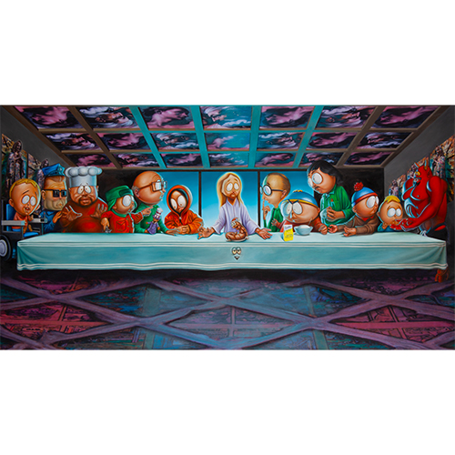
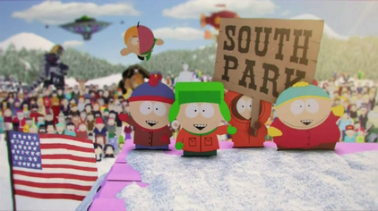
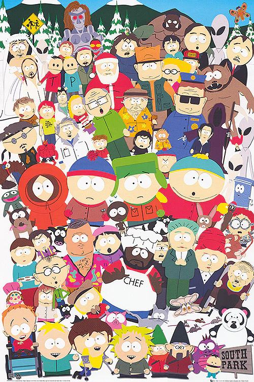
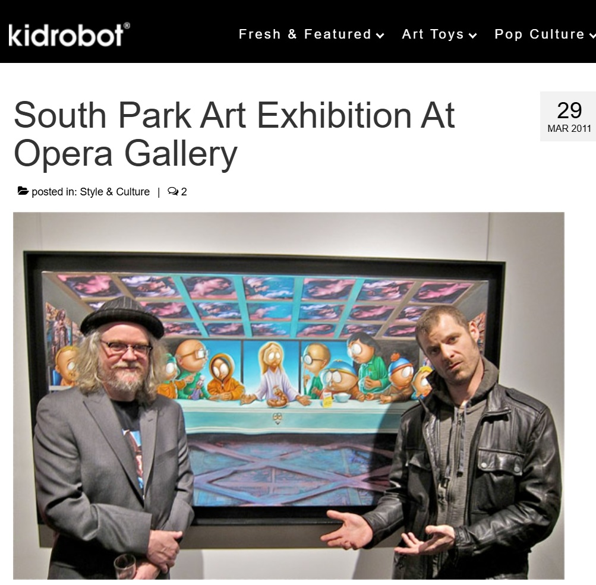
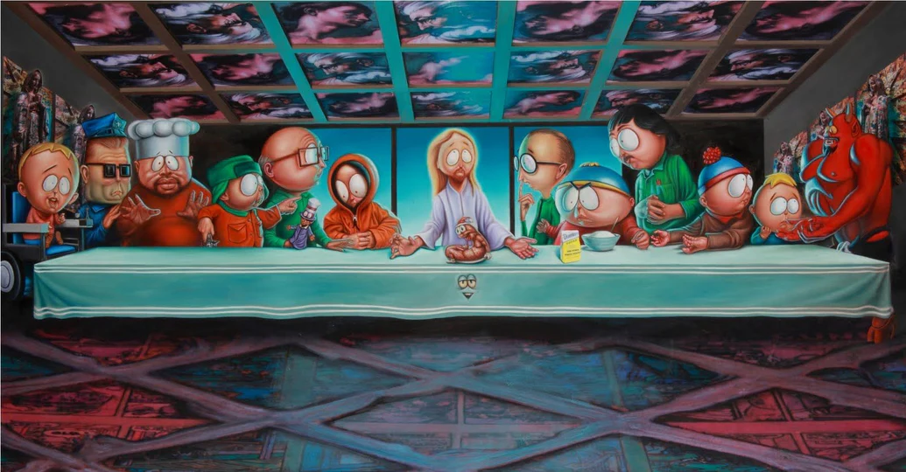

Exhibitions
South Park Art Gallery: South Park 15th Anniversary: 15 Artists Interpret “South Parkâ€, Opera Gallery, New York, New York, US, March 28–April 10, 2011.
Literature
Ron English, Status Factory: The Art of Ron English (San Francisco: Last Gasp of San Francisco, 2014), p. 80. ISBN 978-0867197891.
Ron English, Original Grin: The Art of Ron English (Paris: Cernunnos, 2019), p. 254. ISBN 978-2374950938.
Notes
This work references Leonardo da Vinci’s The Last Supper and South Park.
The composition also references the central South Park character group.
The work appeared in the South Park Art Gallery exhibition at Opera Gallery, New York, organized for the fifteenth anniversary of South Park. Arrested Motion described the exhibition as curated by Ron English and noted that his “last supper†reinterpretation was featured in the show.
The work also appears in Kidrobot’s coverage of the South Park Art Exhibition at Opera Gallery and in multiple online articles and image posts related to the exhibition and later circulation.
This composition was later reproduced as a related giclée print on Hahnemühle Photo Rag Pearl paper. Sprayed Paint Art Collection identifies the print as a signed 2012 edition of 150 measuring 19 × 13 inches, printed with Epson pigmented inks and individually numbered by the artist.
Ancillary Documentation
The following materials document the work through source-reference imagery, exhibition coverage, and related print documentation.





Selected Online Circulation
Selected online documentation related to this work, the South Park Art Gallery exhibition, related print circulation, and later online reproduction. This list is not exhaustive.